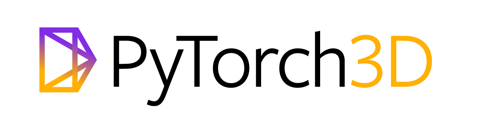

New Capabilities in Vision and Learning
The goal of my work is to design advanced visual perception models that extend the boundaries of current visual capabilities. My research explores new spatial tasks and novel visual representations that transform images into 2D and 3D outputs. Hover over each topic to learn more about our work. For a full list of publications, visit my Google Scholar.
2D Perception
Selected Projects

|
Mask R-CNN Best Paper Award (Marr Prize) |

|
Detecting and Recognizing Human-Object Interactions |

3D Perception


3D Reasoning
Selected Projects
| VADAR: Visual Agentic AI for Spatial Reasoning with a Dynamic API |


Tools
Selected Projects
| Accelerating 3D Deep Learning with PyTorch3D | |
|
|
Detectron / Detectron2 |